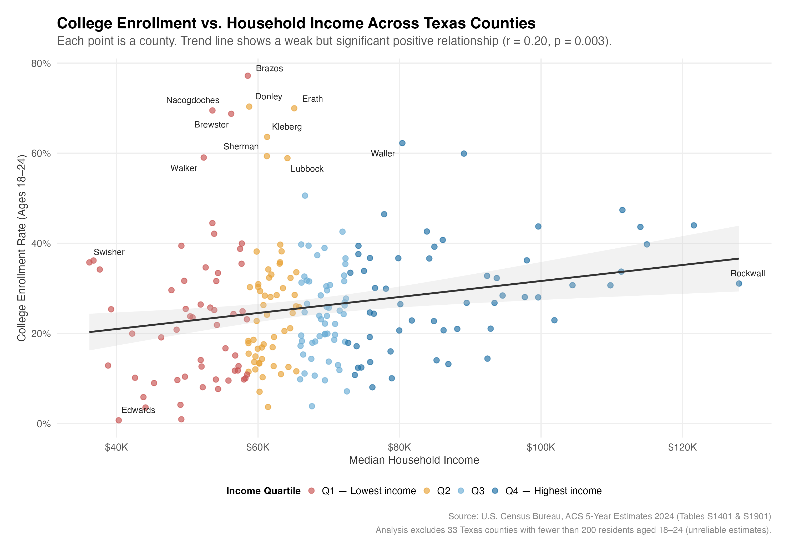
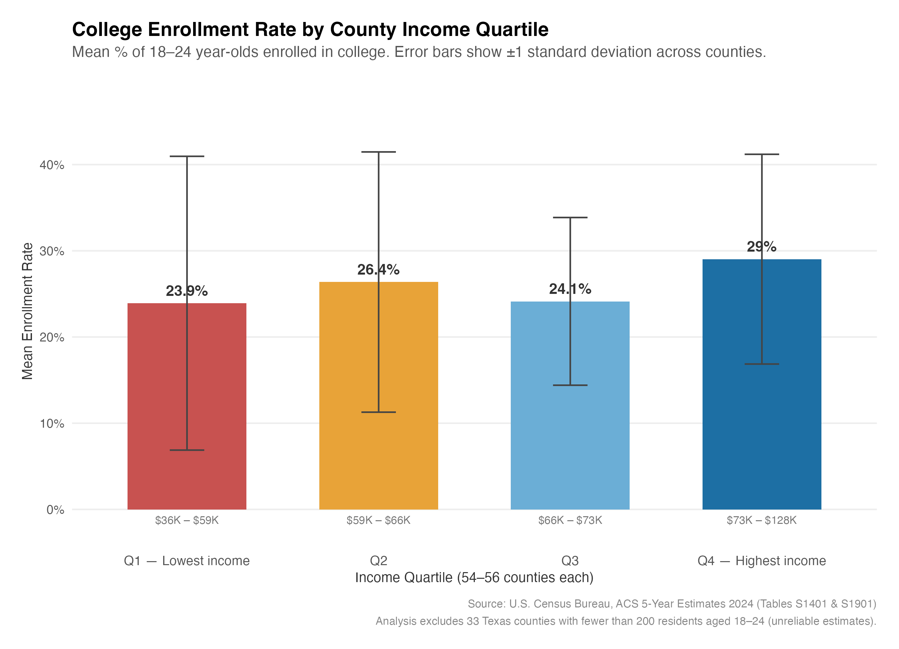
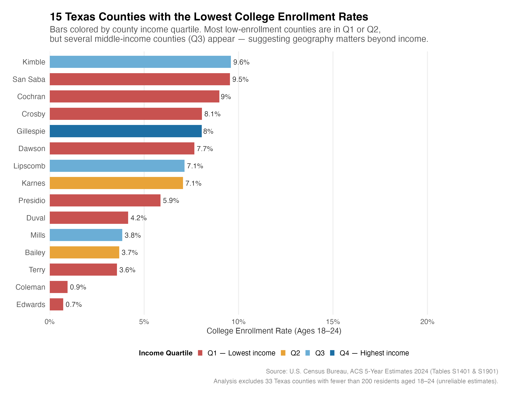
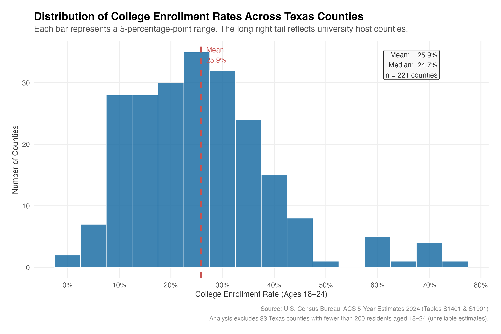

Data Analysis • Education Equity • Texas
Does household income predict whether young people in Texas go to college? And if income alone doesn't fully explain the gap, what else might?
Jonathan Cox is a sociologist and data analyst focused on education equity and social policy. This project uses publicly available Census data to surface patterns in who attends college across all 254 Texas counties.
Key Findings
Across 221 Texas counties with reliable population estimates, income and college enrollment move in the same direction. But income explains only a small fraction of why enrollment rates vary so dramatically across the state. The stronger predictor appears to be something else entirely: whether a county has a college nearby.
Pearson correlation between county median income and enrollment rate. Statistically significant (p = 0.003), but income explains just 4% of the variation across counties.
Percentage-point gap in average enrollment between the highest and lowest income quartiles (29% vs. 24%). Real, but smaller than most would expect.
Enrollment rate in Brazos County, home to Texas A&M, the highest in the state. Driven by institutional presence, not household wealth.
Enrollment rate in Mills County, a middle-income county more than 100 miles from the nearest university. Geography, not income, explains this gap.
Analysis
The scatter plot below places every Texas county as a single point. The trend line confirms that higher-income counties tend to have higher enrollment rates, but the relationship is loose. Counties cluster far above and below the line, meaning many other factors are at work.
The most striking outliers are university host counties. Brazos (Texas A&M), Erath (Tarleton State), and Nacogdoches (Stephen F. Austin) enroll far more young people than their income levels predict. At the other extreme, several rural counties in West Texas and the Panhandle sit at the bottom regardless of income.
Income explains only 4% of the variation in enrollment rates. University presence appears to be a far stronger predictor of whether a county sends its young people to college.

College enrollment rate (ages 18–24) vs. median household income, 221 Texas counties. Points colored by income quartile. Labeled counties are the strongest residual outliers from the linear trend line.
When counties are grouped into four equal income tiers, the highest income quartile does enroll more students on average. But the Q2 and Q3 averages are nearly identical, and the error bars reveal the core challenge: the spread within each quartile is three times larger than the gap between them.
This matters for policy. Interventions targeting income alone would miss most low-enrollment counties. Within any income group, some counties enroll at rates far above the norm, pointing to campus access, high school quality, and community context as forces that operate independently of household wealth.

Mean college enrollment rate by county income quartile (54–56 counties each). Error bars show ±1 standard deviation. Within-quartile variation substantially exceeds the between-quartile gap.
The fifteen counties with the lowest enrollment rates are concentrated in West Texas, the Panhandle, and the Rio Grande Valley, regions with limited higher education infrastructure and significant distances to the nearest campus. Most are low-income, consistent with the correlation.
Mills, Lipscomb, and Karnes counties sit in Q3 (middle income) yet rank in the bottom 15 statewide. Their income levels give no warning of the access gap their young residents face.

The 15 Texas counties with the lowest college enrollment rates, colored by income quartile. Q3 counties (Mills, Lipscomb, Karnes) are notable outliers whose income levels do not predict this degree of access gap.
Most Texas counties enroll between 10% and 40% of their 18–24 year-olds in college. But the distribution is right-skewed, with a long tail of high-enrollment counties pulled upward by university towns. The mean (26%) sits above the median (25%), a signature of that skew.
The shape matters for policy. Interventions designed around the average county would miss the significant cluster of counties below 15%, where access barriers are likely structural and require more targeted responses.

Distribution of college enrollment rates across 221 Texas counties (5-point bins). The right tail reflects university host counties. The dashed line marks the mean (26%).
Methodology
Two tables were downloaded from the U.S. Census Bureau's American Community Survey (ACS) 5-Year Estimates, 2024 release, covering 2019–2024: Table S1401 (School Enrollment) and S1901 (Household Income) for all 254 Texas counties.
ACS table exports are structured with counties as columns and demographic categories as rows. The raw files were reshaped into a standard tidy format, the two target variables were extracted (18–24 enrollment counts and median household income), and the tables were joined by county name.
Thirty-three counties with fewer than 200 residents aged 18–24 were excluded from analysis; ACS estimates for very small populations carry margins of error larger than the estimates themselves. Fourteen counties where enrollment appeared as zero (likely Census suppression, not a true count) were recoded as missing to avoid deflating the correlation.
Descriptive statistics, income quartile groupings, and a Pearson correlation were calculated across the remaining 221 counties. The fifteen lowest-enrollment counties were identified and their income levels examined to test whether income alone predicted the gap.
Four charts were produced in ggplot2: a scatter plot of the income–enrollment relationship with labeled outliers, a bar chart comparing enrollment by income quartile, a ranked list of the lowest-enrollment counties colored by income group, and a histogram of the statewide enrollment distribution.
Tools & Packages